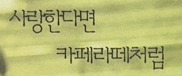

Yoon 회상II
과거를 떠올리는 장면 위에 가만히 올라 앉는
단정한 자막의 감성.
회상II체는 마치 타자기로 쓴 글씨처럼
아날로그한 매력을 가득 품고 있습니다.
그러니 회상II체로 무언가를 적을 때는
조심해야 해요.
나도 모르게 과거로 훌쩍 시간 여행을 떠나
돌아오지 못할 수도 있으니까요.
출시년도:1998
스펙:한글 2,350자 / 라틴 95자 / 부호 985자